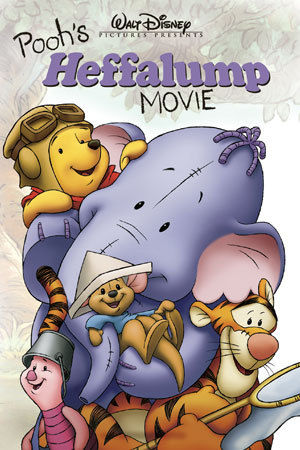
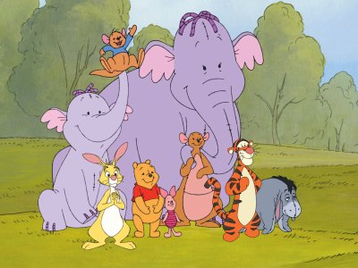
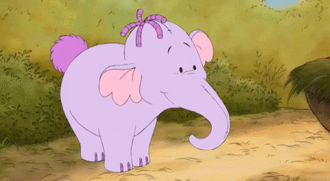

Heffalump is a fictional character that has been mentioned in Winnie-the-Pooh (1926) and The House at Pooh Corner (1928) written by Author A.A. Milne. But the character of Heffalump had never been given a real structure in Milne’s children’s story books. He is an animal that the residents of the 100 Acre Wood fear. But in the Disney animated film Pooh’s Heffalump Movie he comes across as a friendly young four-footed creature. His color is lavender and a trunk similar to what an elephant has. Heffalump lives in the 100 Acre Wood but his address is not known as he is rarely seen. His favourite food is honey which is also Pooh’s favourite food.
  